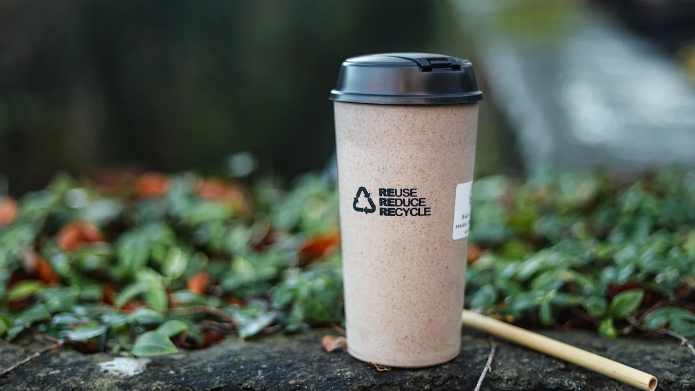
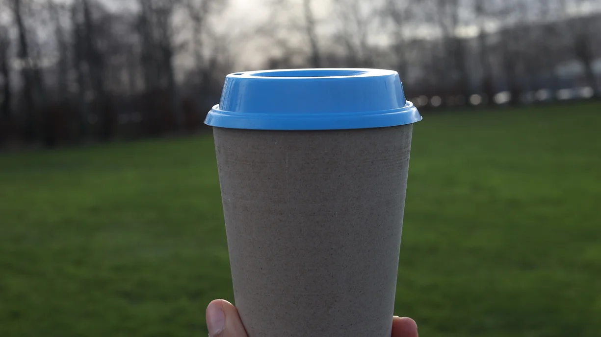

USE Sustainable Stater Kit - Kick Start Your Journey with earthly
.
This starter kit is all you need to start the revolution. what is Sustainable starter kit? If you are curious then be on CONTENTS
2 Bamboo Straws
1 Plant Based Reusable Cup with 2 lids
1 Natural Loofah
1 box of 50 Bamboo Cotton Eartips
1 Bamboo Toothbrush
Pricing
Sustainability Starter Kit
- €10.99
- Govt Approved, Tested, and approved in TUV Rhineland, Germany
- 100% recyclable and non-toxic
- Leak-Proof
- Odorless tasteless and doesn’t react with hot beverages
- Lightweight
- Microwavable
Features
Natural Bamboo Loofah
€3.99Regular Price
€2.99 Sale Price- Wet the loofah or soak it in water
- Apply soap or body wash
- Gently rub the loofah against your skin in circular motions

What it is?
Natural loofah sponges actually come from the fruits of vine-growing Luffa plants.These plants are part of the gourd family (Cucurbitaceae) making them relatives of watermelons, cucumbers and pumpkins. When a luffa fruit dries out and is peeled, you are left with its fibrous interior, which can be used as a sponge.It is biodegradable and is an organic, eco-friendly exfoliating body scrubber. Both men and women can use it, suitable for shower and bathtub.
How to use
Bamboo Toothbrush (set of 2)
€4.49Regular Price
€3.59 Sale Price- Wash your best eco-friendly toothbrushes with water to avoid any kind of bacteria growth.
- Make sure there is no ingredient left on bristles.
- Keep it in a dry and safe place.

What it is?
Earthly Bamboo Toothbrush are BPA free, Biodegradable and have charcoal infused bristles that help remove stains effectively. We guarantee your satisfaction. See for yourself!
Care Guide
Plant Based Reusable Containers
- €2.99 
What it is?
Sourced from local farmers, plant residue from Bamboo, Wheat, Rice, and Barley is processed and molded into reusable containers which can be used hundreds of times. Microwave safe, seal proof, and sturdy, they are perfect to store snacks or lunch. Designed in USA. Tested in Germany.
Care Guide
Can be reused hundreds of times. Just wash under a tap or in a dishwasher.
Plant Based Reusable Cups
€2.99Regular Price
€2.39 Sale Price

- Rinse the cup and the lids thoroughly.
- Dispose them into a Recycle bin.
- Dispose with food waste.
- Throw with General Wate.
What it is?
Barista's love it! Easy to clean, hassle free and Plant Based. Sourced from local farmers, plant residue from Bamboo, Wheat, Rice, and Barley is processed and molded into reusable cups which can be used hundreds of times. So, every batch is unique, Just. Like. You.
How to Dispose
- DO:
- DON'T:
Reusable Bamboo Straws
- €1.99
- Wash it with clean water under the tap.
- Put it in the dishwasher.
- Boil in water for a few minutes.

What it is?
We collaborated with artisans in Veitnam, Earthly Organic Bamboo Straws are 100% Compostable, Vegan and BPA free. They can be reused, thrown in a compost bin, or even in your backyard. Serve with cold beverages like ice tea, cold coffee and many more.